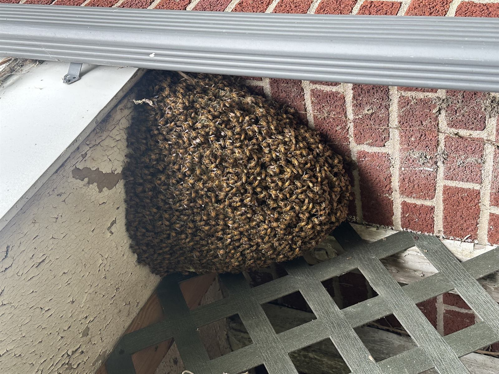

Why Most Pest Control Companies Get Honey Bees Wrong
Honey bees (Apis mellifera) are not yellow jackets, hornets, or wasps. They're a protected pollinator species, a national agricultural asset, and — when removed correctly — a healthy resource that can be relocated to a working apiary. Spraying a honey bee colony in a wall is illegal in many situations, ecologically destructive, and creates a structural mess (a dead colony rots, attracts pests, and leaves wax and honey behind that need to be removed anyway).
We're listed swarm collectors with the Pennsylvania State Beekeepers Association and the Capital Area Beekeepers Association. The Alleman Apiary (our beekeeping operation) takes every colony we collect. Removal is live, humane, and ends with the colony in a managed hive — not a trash bag.


Types of Removal We Do
Swarm Capture (Free or Low-Cost)
A swarm is a temporary cluster of bees on a tree branch, fence post, mailbox, or low shrub — usually a baseball to basketball-sized ball of bees. They're docked between hives, looking for a new home. Easiest, cheapest removal. Call us within a day or two — they'll leave on their own and find a wall void if you wait.
Structural Cutouts
For colonies that have established inside a wall, soffit, ceiling, chimney, or shed. Requires opening the structure to access the comb. We coordinate with siding/drywall repair where needed. Significantly more involved than swarm capture, priced accordingly.
Trap-Outs
For colonies in spots that can't be opened — masonry chimneys, certain tree cavities, historic structures. We install a one-way exit cone with a bait hive. Bees leave to forage, can't return, and accumulate in the bait hive over 4–6 weeks. Slowest method but sometimes the only option.
Honey Bee Identification
Often what looks like honey bees is actually yellow jackets, bumble bees, carpenter bees, or paper wasps. We identify by photo (text us one) before quoting — pricing and approach are wildly different. Don't pay honey bee removal pricing for a yellow jacket nest.
Post-Removal Repair Coordination
Cutouts leave a structural opening that needs siding, drywall, or soffit repair. We don't do the repair work ourselves but we coordinate with contractors we trust if you need a referral.
Colony Inspection & Re-Hiving
Every removed colony gets inspected for varroa mites, brood disease, and queen health at the apiary. Healthy colonies join managed hives; struggling colonies get split, requeened, or combined as needed.
Service Area — All of Central PA
Dauphin County: Harrisburg, Hershey, Hummelstown, Palmyra, Linglestown, Colonial Park, Susquehanna Township, Lower Paxton.
Cumberland County: Camp Hill, Mechanicsburg, Carlisle, Lemoyne, Wormleysburg, New Cumberland, Enola, Boiling Springs, Dillsburg.
Lebanon County: Lebanon, Annville, Cleona, Palmyra (Lebanon side).
York County: Mount Wolf, Manchester, Dillsburg-area properties on the York side.